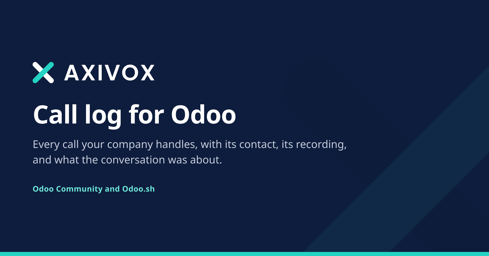
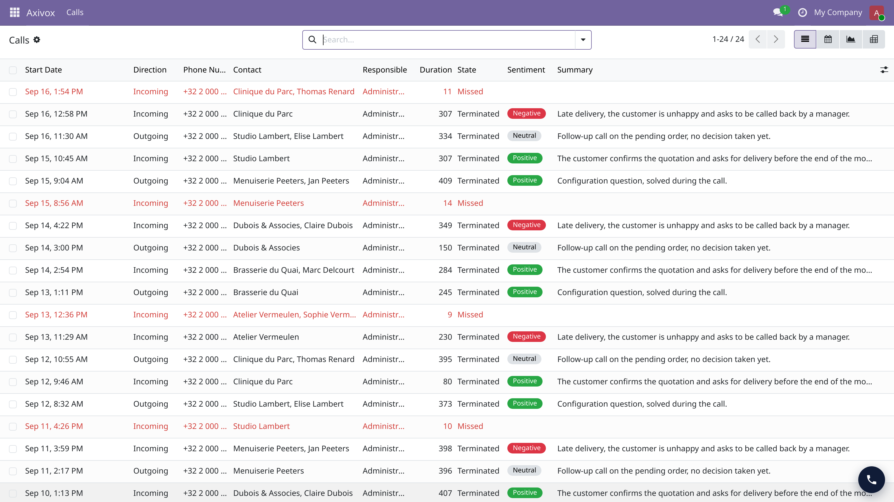
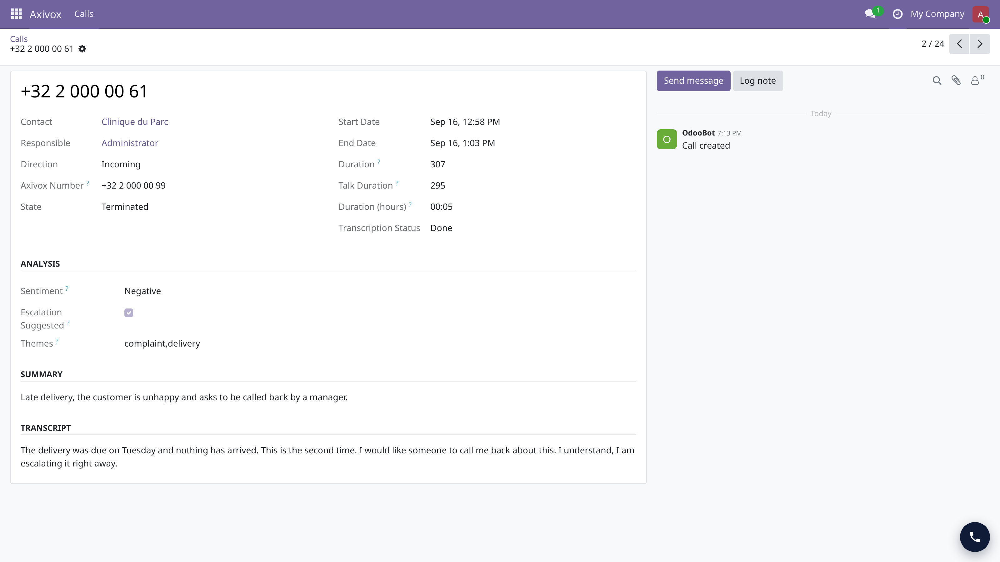
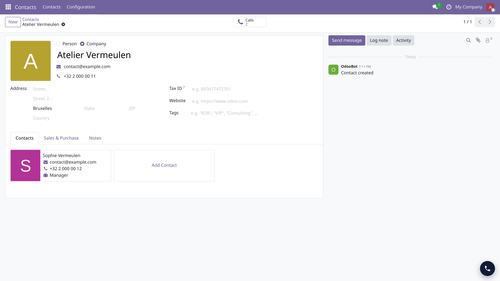
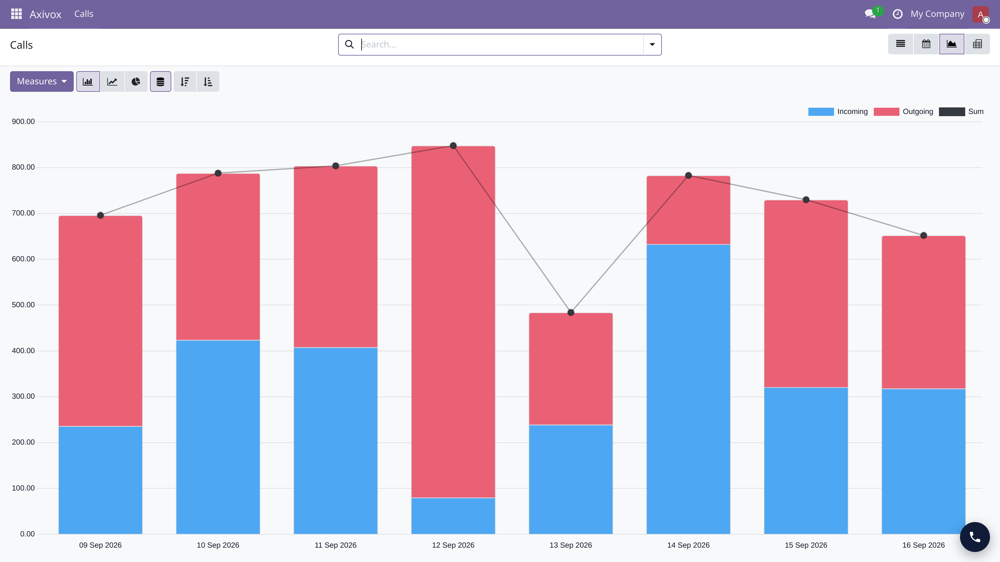

Every call your company handles, inside Odoo, with its contact, its recording, and what the conversation was about.

Odoo's own call log lives in its Phone application, which is Enterprise only: on Community it cannot even be installed. This module provides the same thing, under its own model name, and with the same field names as Odoo's, so that moving to Enterprise one day changes nothing for you.
Calls are written by the Axivox connector. The module stores what it receives and never calls out on its own.
| Every call | Incoming and outgoing, with the contact it belongs to and the colleague who took it. |
| Two durations | The whole call, and the time actually spent talking. A long call that was mostly on hold no longer looks like a long conversation. |
| Transcription and summary | When they are enabled on your Axivox account, the text of the call and its summary arrive with it. |
| What it was about | Sentiment, themes, and a flag when the call looks worth a follow-up, read from the transcript. Filter and group on any of them. |
| Which number was called | The one of your own numbers the call came in on, so a campaign line can be told apart from the switchboard. |
| The recording | Attached to the call itself, playable from Odoo. |
| A button on the contact | Every contact carries its own call count and opens its own history. List, calendar, graph and pivot views come with the module. |



An Axivox account is required: the module displays what your telephony sends it, it is not a telephony system of its own. No external Python dependency, nothing to install beside the module.
Where it runs: Odoo Community and Odoo.sh. This module adds a model and server-side code, so it cannot be installed on Odoo Online.
Free, and published under the LGPL-3 licence.